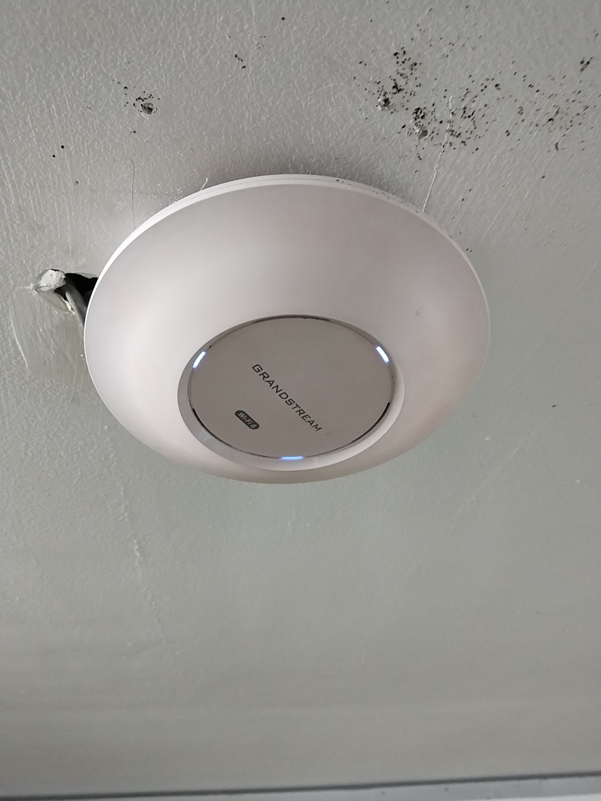
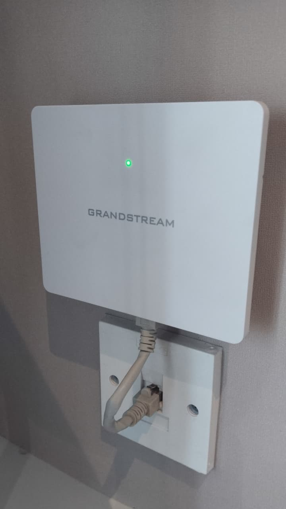
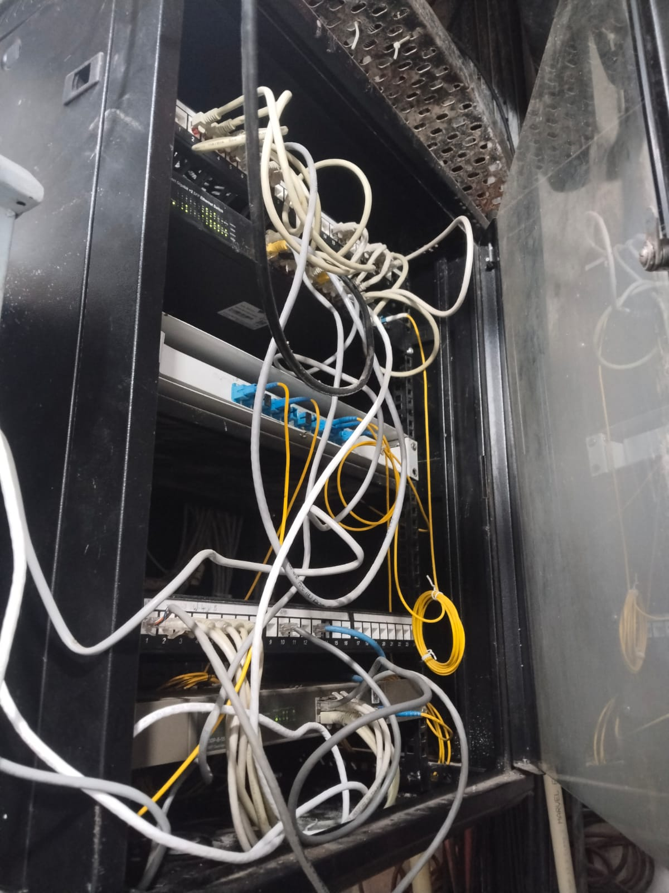
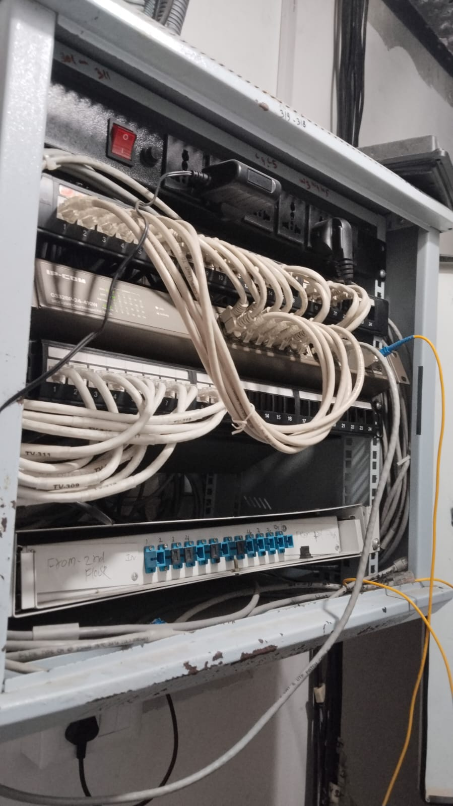
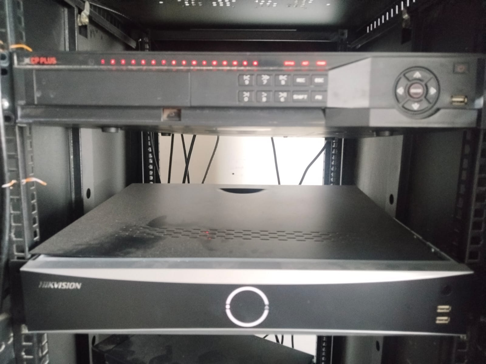
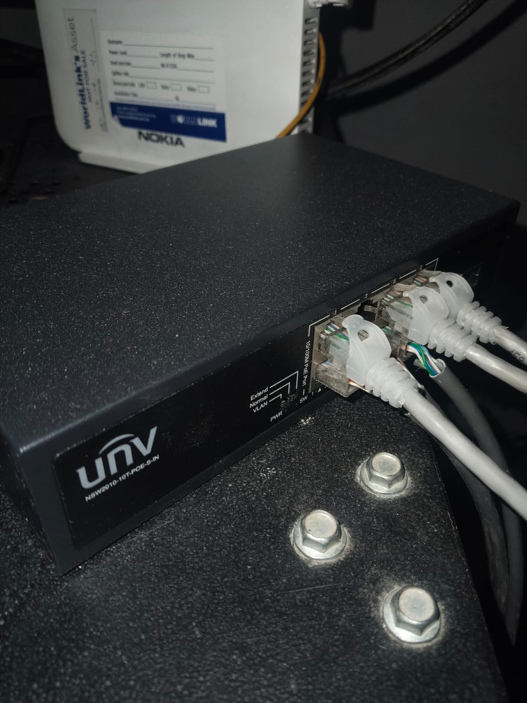

Enterprise Access Point
Practical exposure to wireless infrastructure and access-point deployment.
AVAILABLE FOR OPPORTUNITIES
Building Systems. Securing Technology. Exploring What's Next.
Passionate about networking, AI, cybersecurity, and modern software development — continuously learning, building, and experimenting with technology.
A connected view of the areas I'm learning, building in, and gaining practical experience with. Select a node to explore its context.
Exploring how devices, services and networks connect — supported by practical exposure to switching, wireless access points, structured cabling and network troubleshooting.
This map represents learning areas and documented work — it is not a live network monitor or a claim of professional certification.
Passionate about networking, AI, cybersecurity, and modern software development, I continuously learn, build, and innovate to create impactful technology solutions.
I'm early in my journey across technology's most interesting intersections — from wiring server rooms to writing code to studying how systems get attacked and defended. I don't claim to be an expert in everything I touch; I'm building real, honest skill one project and one practical experience at a time.
Capabilities are connected to practical work, public projects, or clearly labelled learning.
No percentage ratings or unverified credentials.

Practical exposure to wireless infrastructure and access-point deployment.

Hands-on exposure to access points and hotel Wi-Fi infrastructure.

Exposure to rack-mounted equipment and structured IT infrastructure.

Practical exposure to switches, rack infrastructure and connectivity.

Hands-on exposure to CCTV infrastructure, network video recording and surveillance systems.

Practical exposure to fiber infrastructure used for high-speed network connectivity.

Hands-on exposure to network switching hardware and structured connectivity.
Selected examples of practical IT and networking exposure. These describe my contribution, not ownership of the entire infrastructure.
A clear distinction between completed public work, projects in development, and areas still being learned.
A transparent snapshot of public repository work, with each update linked to its source commit.
This is a curated snapshot, not a live GitHub feed. Only commits that could be verified in public repositories are listed. Projects without public commit history are represented by their stated development stage in the Projects section.
Open to internships, entry-level opportunities, and interesting collaborations across networking, cybersecurity, and software.
A small command interface for exploring this portfolio. It does not run system commands or access your device.